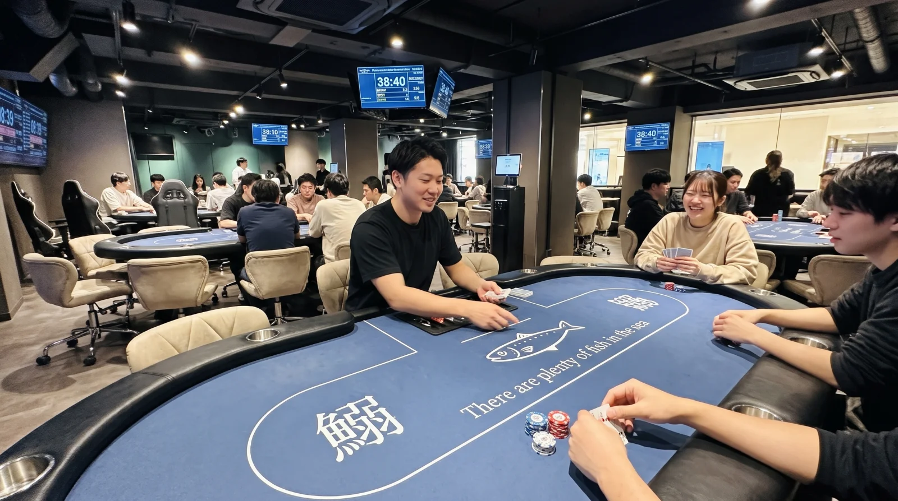

FIRST VISIT
いわし赤坂で、初めてのポーカーを。
ハンドを選んで、チップを置く。赤坂見附駅から徒歩1分のいわし赤坂では、リングゲームとトーナメントを楽しめます。
初めての方は、遊び方と料金、当日の受付の流れからご覧ください。
Tournaments
開催日・参加費・受付締切は店舗の大会カレンダーで確認できます。


来店予算の目安
2026年11月19日の店舗掲載例です。リングの開催状況と大会の参加費は、その日の案内をご確認ください。
FAQ
初めてです。来店までの流れは？
まずゲームと料金を見て、リングゲームとトーナメントのどちらに参加するか決めます。リングゲームなら当日の開催と空席を店舗に、大会なら参加費・開始時刻・受付締切をPokerFansで確認してください。当日は赤坂の黛ビル3階で受付します。初めて遊ぶ方は、受付でその旨をお伝えください。
リングゲームとトーナメントはどう違いますか？
リングゲームは、空席がある卓に途中から参加でき、自分のタイミングで終了できます。トーナメントは、決まった時刻に始まり、参加者の順位を競う形式です。短時間だけ遊びたい方はリングゲームの空席を、大会に出たい方は開催日程を確認すると予定を立てやすくなります。
予約はできますか？
トーナメントは、PokerFansの各大会ページに「参加予約」がある回なら、その画面から申し込めます。受付締切や参加条件は回ごとに異なるので、予約前に確認してください。リングゲームについては、来店したい時間を添えて店舗へ電話し、当日の開催と空席を確認してください。
初回はいくらかかりますか？
リングゲームの2026年11月19日掲載の料金例では、0.5–1卓でチップ50点が5,000円、チャージが600円、ドリンクが600円からで、合計6,200円からです。別の卓ではチップの購入額が変わります。トーナメントは大会ごとに参加費が異なるので、参加予定の大会でチャージやドリンクを含めた費用もご確認ください。
ルールを教わることはできますか？
説明を希望する方は、来店したい日時を添えて店舗へお問い合わせください。その日に説明を受けられるか、何時ごろに来店すればよいかを事前に確認できます。先に用語を見ておきたい方は、テキサスホールデムの基本でチェックやコールなどを確認できます。
短時間だけでも遊べますか？
空席があるリングゲームなら、途中から参加し、自分のタイミングで終えられます。退店したい時刻が決まっている方は、来店前に卓が開いているかを確認してください。トーナメントは進行によって滞在時間が変わるため、時間に余裕のある日にご参加ください。
大会の開始時刻に間に合わないときは？
開始時刻と受付締切は別に案内されることがあります。途中参加できるかは、大会日程から当日のPokerFansページを開き、受付締切と参加条件を確認してください。判断に迷うときは、到着予定時刻を店舗へ電話で伝えてご確認ください。
お店はどこにありますか？
赤坂見附駅から徒歩1分、東京都港区赤坂3-10-3の黛ビル3階です。店舗情報・アクセスの地図で、出発前にビルの場所を確認できます。大会に参加する場合は、移動時間に加えて受付の時間も見込んでおくと安心です。
POKER ROOM
Poker House いわし赤坂
赤坂見附駅から徒歩1分
- 住所
- 東京都港区赤坂3-10-3 黛ビル3F
- 営業時間
- 平日 17:00〜翌5:00
土日 13:00〜翌5:00